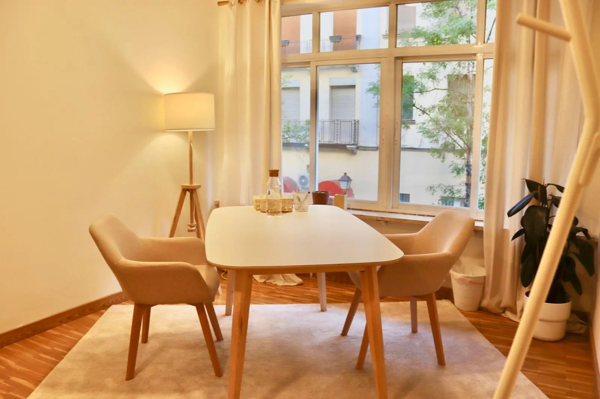
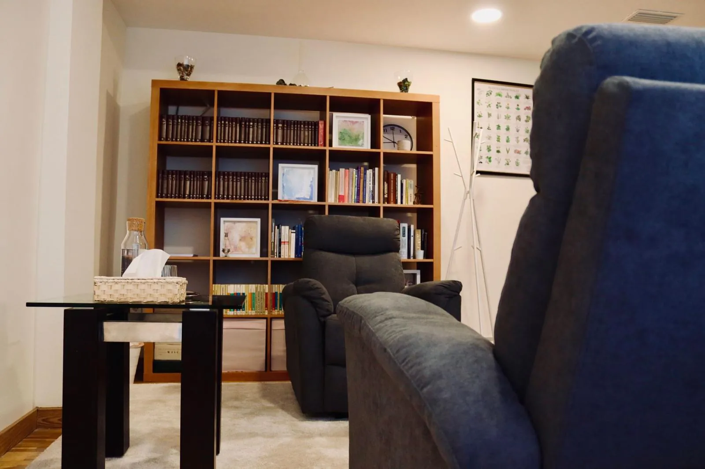
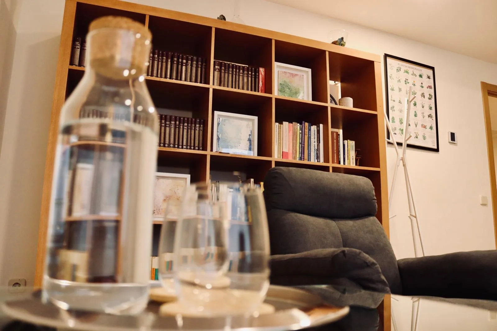
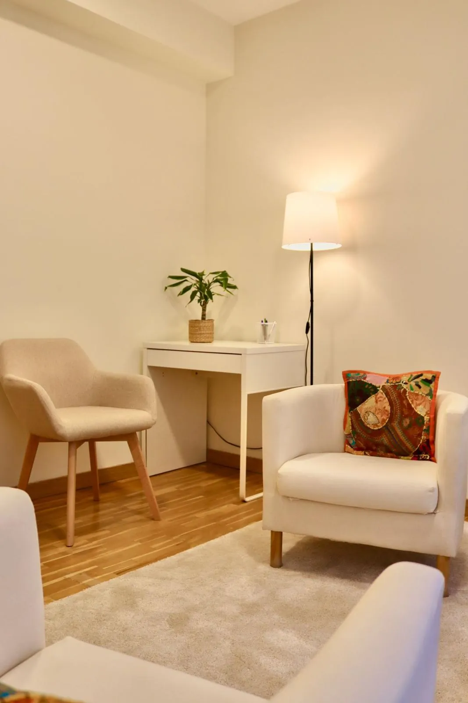
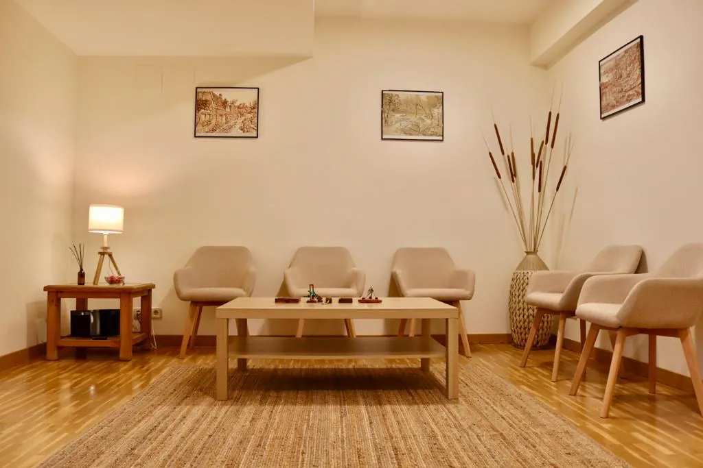
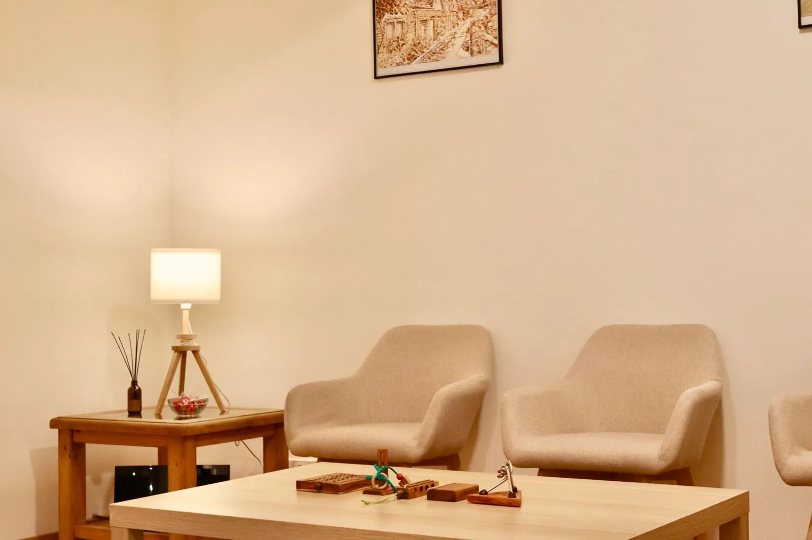
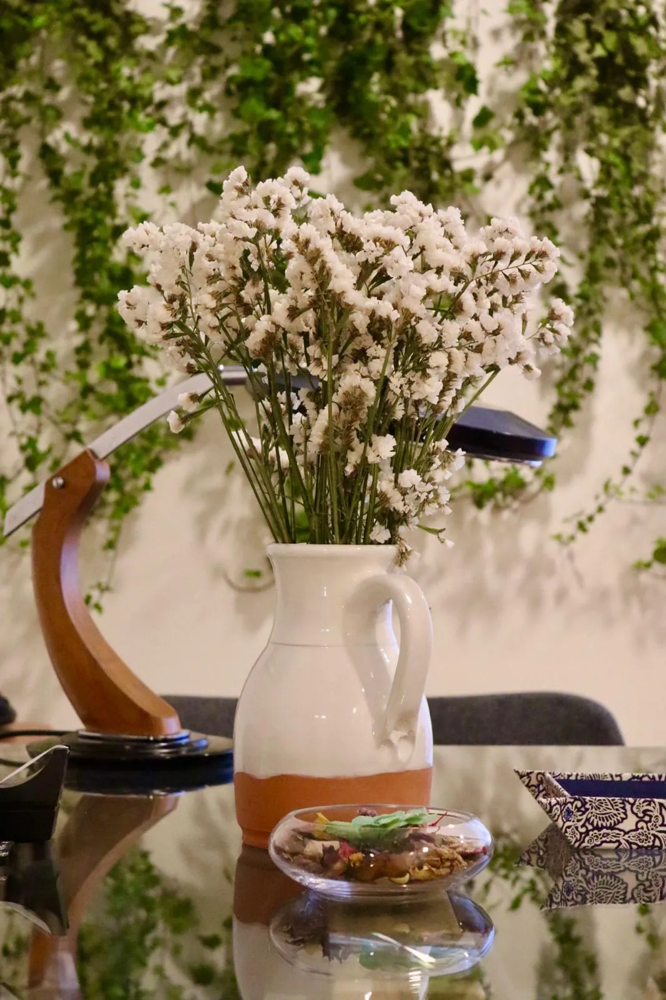

Terapia presencial en Madrid centro
Hay conversaciones que piden estar en la misma habitación. Venir a consulta es también salir un rato de la rutina y tener un lugar y un tiempo que son solo para ti.
Nuestro centro sanitario está en la calle Martín de Vargas, 5, en Madrid centro. Es un espacio tranquilo y luminoso, con despachos amplios y una sala que hace de sala de espera y de lugar de encuentro para grupos y talleres.
Si en algún momento te viene mejor, también puedes elegir la terapia online o combinar las dos.

Espacios pensados para hablar con calma



Sala de espera y de grupos
Es el lugar donde esperas antes de tu sesión y donde nos reunimos en los grupos y talleres.



CÓMO LLEGAR
Ver en Google Maps
Calle Martín de Vargas, 5
- Dirección
- Calle de Martín de Vargas, 5 · 28005 Madrid
- Metro y Cercanías
- Embajadores (línea 3), con transbordo a Acacias (línea 5) y Cercanías C-5
- Autobuses
- A menos de 200 metros, en Embajadores: 27, 34, 36, 41, 60, 78, 116, 118, 119, 148, C1 y C2
- Horario
- De lunes a sábado, de 8:00 a 22:00
Centro sanitario autorizado por la Comunidad de Madrid. Nº de registro: CS19975.
¿Quieres venir a conocernos?
La primera entrevista sirve para conocernos y pensar juntos qué te pasa y cómo abordarlo.